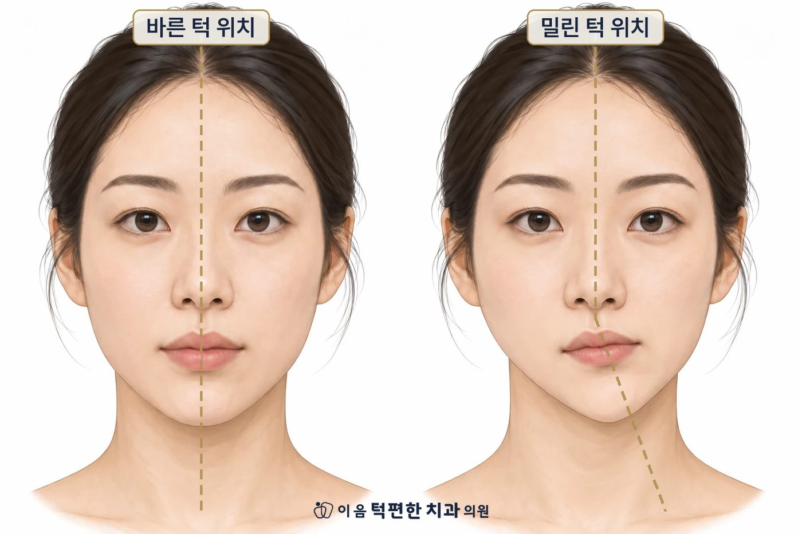

코 아래부터 턱끝까지, 얼굴 아래쪽의 모양은 아래턱의 위치가 크게 좌우합니다.
아래턱이 다물 때 멈추는 자리는 위아래 치아의 맞물림이 정합니다.
맞물림이 좌우 대칭이 아니면, 아래턱은 늘 틀어진 자리에 머물게 됩니다.
틀어진 위치가 오래가면 뼈의 모양까지 달라질 수 있습니다. 지금 어느 단계인지 확인하는 것이 먼저입니다.
아래턱은 귀 앞의 양쪽 턱관절에 매달려 움직이는 뼈입니다. 다물었을 때 어디에서 멈출지는 위아래 치아의 맞물림이 정합니다. 씹고 삼키고 다물 때마다 아래턱은 치아가 잘 맞는 자리로 가서 멈춥니다.
거울 앞에서 아래턱을 일부러 한쪽으로 밀어 보세요. 턱끝만이 아니라 인중과 입술까지 따라가며 얼굴 아래쪽 전체가 틀어집니다. 아래턱이 틀어진 자리에 머무는 사람은 이 상태가 평소 얼굴이 되는 것입니다.
진료실에서 비대칭과 함께 자주 확인되는 문제는 네 가지입니다.
한쪽으로만 씹는 습관이나 턱을 괴는 자세도 영향을 주지만, 대개는 시작점이 아닙니다. 맞물림이 불편한 쪽을 피해 반대쪽으로만 씹게 되는 경우가 많습니다.
지금의 비대칭이 아래턱의 위치 문제인지, 뼈의 모양까지 달라진 상태인지에 따라 접근이 다릅니다. 위치 문제라면 맞물림을 바로잡는 치료로 개선의 여지가 있습니다.
얼굴 중심선과 턱끝의 위치, 위아래 앞니의 중심선, 거꾸로 물리는 치아와 먼저 닿는 치아, 턱의 움직임 경로를 확인합니다. 필요하면 영상검사로 뼈의 좌우 차이를 비교합니다.
얼굴 아래쪽의 비대칭이 신경 쓰인다면, 아래턱의 위치와 맞물림부터 확인해 드립니다.
전화 상담 02-6745-2754이 페이지는 일반적인 건강정보이며 개인의 진단이나 치료를 대신하지 않습니다. 증상이 지속되거나 갑자기 악화되면 의료기관에서 진료를 받으시기 바랍니다.